Topografia, laudos e
regularização ambiental
Para obras, loteamentos, agro e indústria. Tudo com ART.
Soluções para cada frente
Da obra urbana ao imóvel rural e à indústria: escolha a sua área e veja o que entregamos.
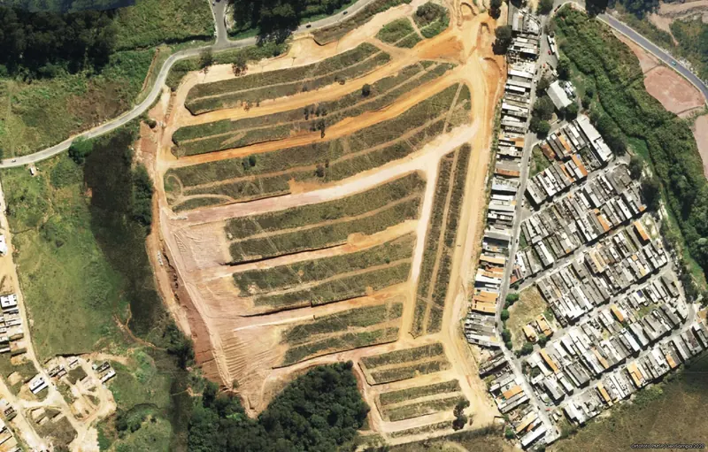
Construção e loteamentos
Topografia, licenciamento e acompanhamento de obras para construtoras, loteadoras e prefeituras.
- Levantamento planialtimétrico
- Topografia para obras
- Inspeção aérea de obras
- Inventário florestal

Agro e imóveis rurais
Laudos, CAR, ITR e georreferenciamento para produtores, cooperativas e bancos.
- Laudo de uso do solo para ITR
- CAR
- Georreferenciamento para crédito rural
- Laudo de APP
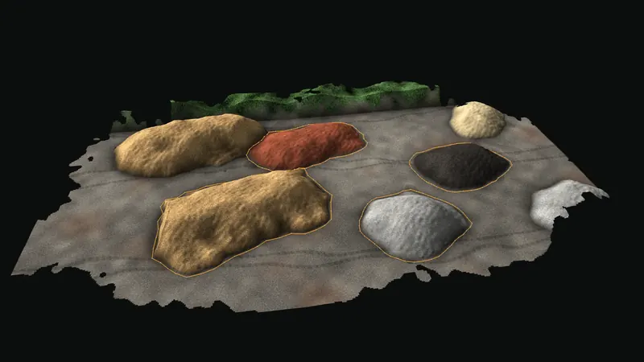
Indústria e empresas
Volumetria, licenciamento, PRAD e monitoramento para indústrias e mineração.
- Volumetria de pilhas
- Licenciamento
- Monitoramento de PRAD
- Inventário florestal
Soluções técnicas

Levantamento planialtimétrico e memorial descritivo
Topografia para projetos, loteamentos e cartório.
Saiba mais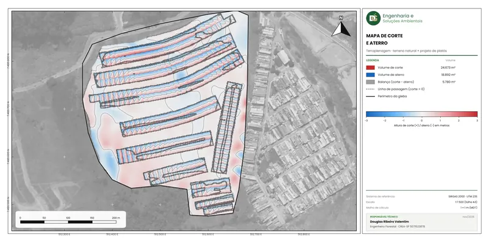
Topografia para obras
Locação, as-built e controle de terraplenagem.
Saiba maisInspeção aérea de obras
Acompanhamento do avanço da obra por imagens.
Saiba mais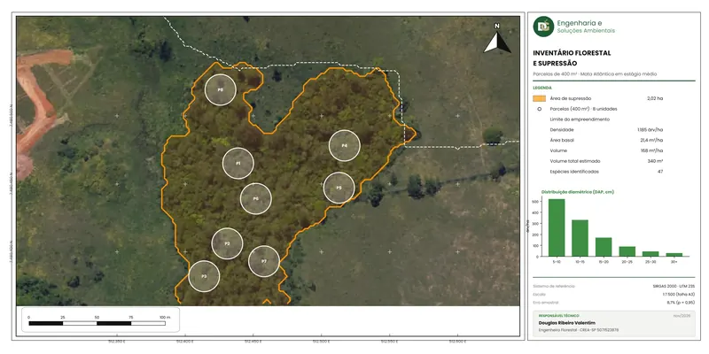
Inventário florestal e supressão de vegetação
Laudo de vegetação e pedido de supressão.
Saiba mais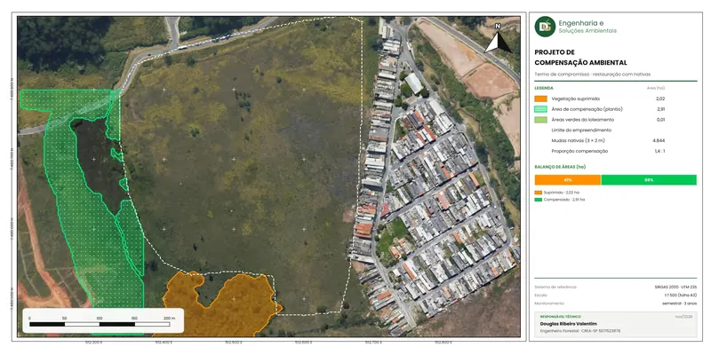
Licenciamento e compensação ambiental
Estudos, termos de compromisso e restauração.
Saiba mais
Aerofotogrametria e mapeamento aéreo
Ortomosaico, MDS/MDT e curvas de nível.
Saiba mais
Volumetria de pilhas e estoques
Volume de estoques medido por aerolevantamento.
Saiba mais
Monitoramento de PRAD e restauração
Relatórios de recuperação de áreas degradadas.
Saiba mais
Laudo de uso do solo para ITR
Mapa e quadro de áreas para a declaração do ITR.
Saiba mais
CAR – Cadastro Ambiental Rural
Inscrição, retificação e regularização no SICAR.
Saiba mais
Georreferenciamento para crédito rural
Polígonos das glebas no padrão SICOR/BACEN.
Saiba mais
Laudo de APP e Reserva Legal
Delimitação, passivo e regularização – rural e urbano.
Saiba mais
Monitoramento de desmatamento
Origem livre de desmatamento comprovada.
Saiba mais
Perícia e assistência técnica
Pareceres e análise histórica por satélite.
Saiba maisExplore um mapa
Escolha o cenário, ligue e desligue as camadas e veja o que entregamos.
Base
Camadas
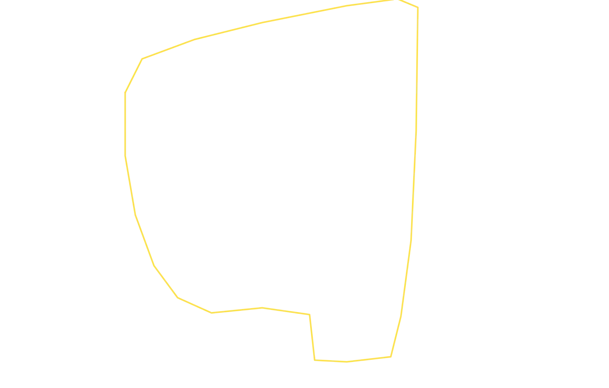
Base
Camadas
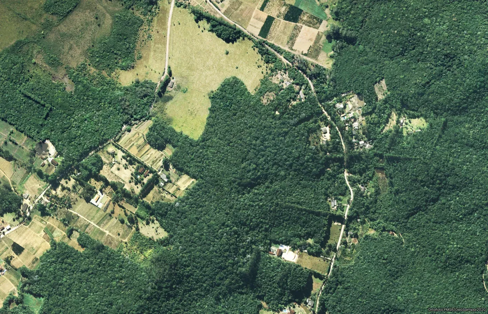

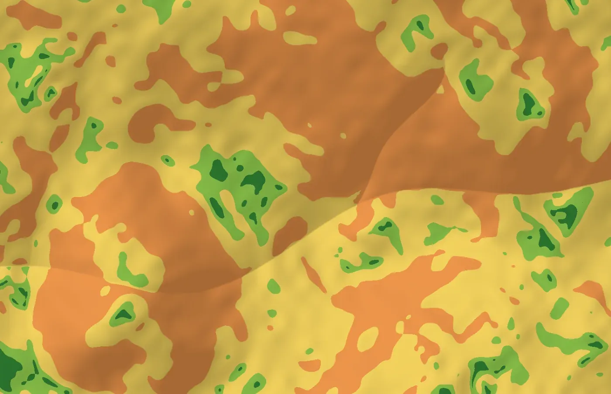
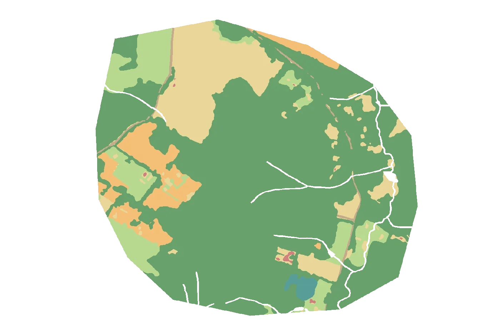


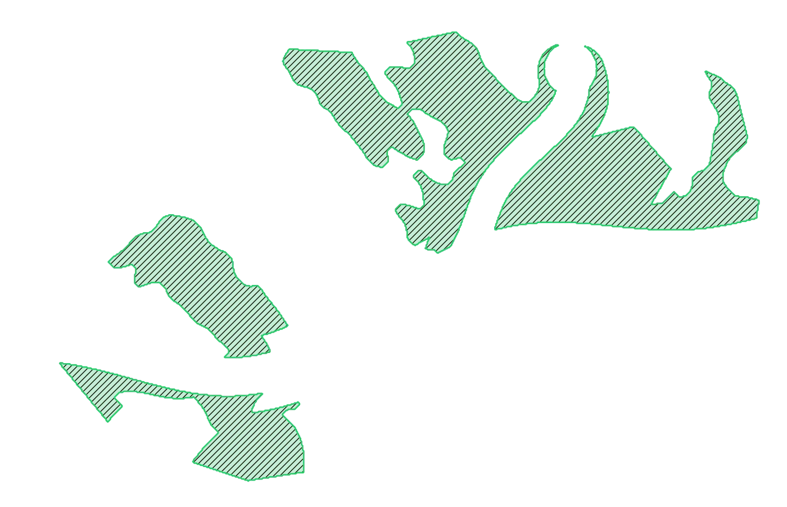

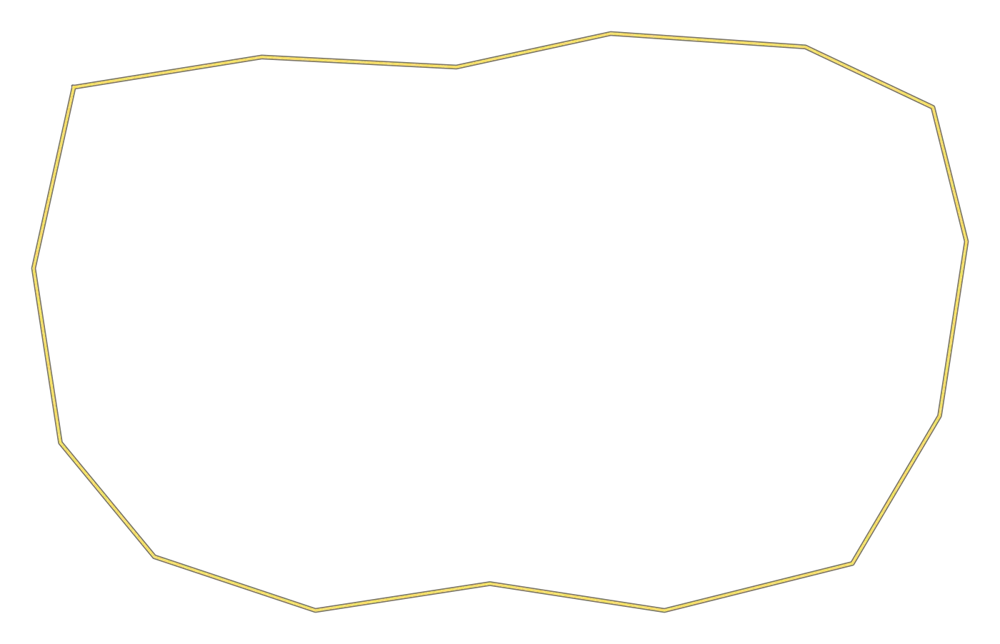
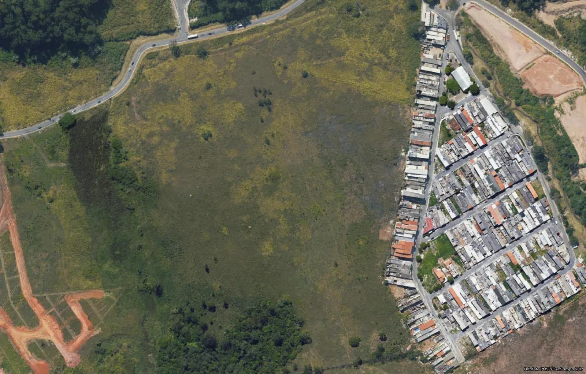
AntesTerraplenagemArraste e compare
Ortomosaicos periódicos mostram o avanço da obra, medem áreas e volumes e documentam cada etapa.
- Comparativo entre campanhas
- Medição de serviços executados
- Relatório para investidor, banco ou prefeitura

 AntesDepois
AntesDepoisArraste e compare
Detecção de supressão de vegetação por imagens de satélite, com alerta georreferenciado e relatório por imóvel.
- Comprovação de origem livre de desmatamento
- Data de corte definida (ex.: 31/12/2020 – EUDR)
- Série histórica para perícias e defesas
Quem atendemos
Construtoras e incorporadoras
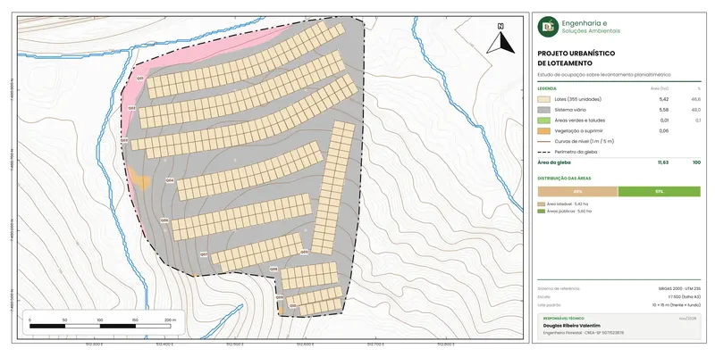
Loteadoras e condomínios

Prefeituras e órgãos públicos
Escritórios de engenharia
Produtores rurais
Bancos e cooperativas
Indústrias e mineração
Advogados e contadores
Do contato à entrega
Você envia a localização, o projeto ou a matrícula e o que precisa, pelo WhatsApp ou e-mail.
Proposta com escopo, prazo e valor fechados. Sem custos extras no caminho.
Campo com GNSS RTK e VANT, sensoriamento remoto por satélite e processamento em geoprocessamento.
Laudo, planta ou relatório assinados com ART, com arquivos prontos para prefeitura, cartório, banco ou órgão ambiental.
Exemplos de produtos
 Uso do solo – ITR
Corte e aterro – terraplenagem
Uso do solo – ITR
Corte e aterro – terraplenagem
 Volumetria de pilhas
Volumetria de pilhas
 Feições do CAR
Inventário florestal e supressão
Feições do CAR
Inventário florestal e supressão
 Modelo 3D por aerofotogrametria
Modelo 3D por aerofotogrametria
 Glebas para crédito rural
Glebas para crédito rural
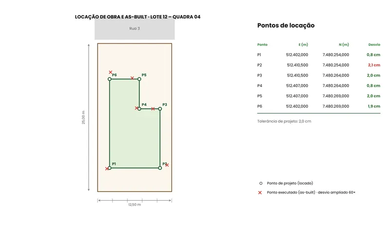
Locação de obra e as-built Compensação ambiental APP e Reserva Legal
APP e Reserva Legal
 Planta planialtimétrica
Planta planialtimétrica
 Monitoramento de PRAD
Monitoramento de PRAD
 Série histórica – perícia
Série histórica – perícia
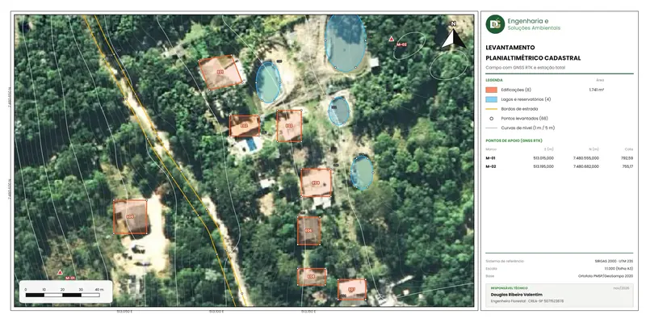
Levantamento planialtimétrico cadastralTecnologia e equipe
Sensoriamento remoto
Imagens de satélite e aéreas, atuais e históricas, para uso do solo e monitoramento.
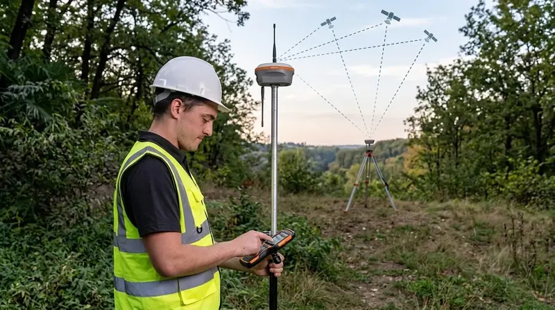
GPS e GNSS RTK
Locação, vértices e pontos de controle com precisão centimétrica.
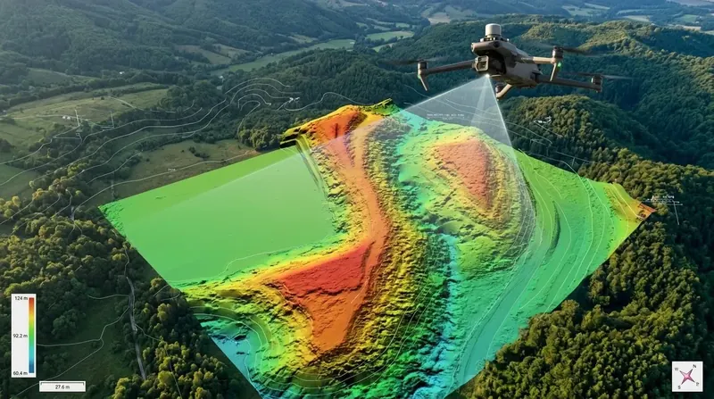
Fotogrametria aérea (VANT)
Ortomosaicos, fotogrametria 3D, curvas de nível, inspeção e volumetria.
Softwares de geoprocessamento
Processamento, análise espacial, cálculo de volumes e mapas a partir de dados de campo e bases oficiais.
Corpo de engenheiros
Equipe técnica habilitada, com ART em todos os trabalhos.


Engenharia, topografia e meio ambiente
A DG Engenharia e Soluções Ambientais reúne topografia, geotecnologia e meio ambiente para atender obras, loteamentos, o agro e a indústria, do levantamento de campo ao laudo assinado.
Todos os trabalhos têm responsável técnico habilitado e ART.
Atendem obras urbanas e loteamentos?
Sim. Topografia para projeto e obra, locação, as-built, terraplenagem, inventário florestal, licenciamento e inspeção aérea para construtoras, loteadoras e prefeituras.
Precisa de vistoria no local?
Topografia, aerolevantamento, inventário e volumetria são feitos em campo. ITR, CAR, crédito rural e monitoramento partem de imagens e documentos, com vistoria quando necessária.
Quais documentos enviar para o orçamento?
Localização ou KML da área, matrícula, projeto (se houver) e uma descrição do que precisa.
Qual o prazo e o valor?
Dependem da área e do serviço. A proposta traz valor e prazo fechados.
Quais regiões são atendidas?
Campo em São Paulo e região. Serviços remotos podem atender outras localidades.
Os trabalhos têm ART?
Sim, todos os laudos, plantas e relatórios.
Em quais formatos são as entregas?
PDF assinado, DWG, SHP, KML, GeoTIFF e planilha de coordenadas, conforme o serviço.
Solicite uma proposta técnica
Envie a localização, o projeto ou a matrícula e o que precisa. Retornamos com escopo, prazo e valor.